Les dossiers.
50 articles, classés par thème. Chacun part d'une idée reçue ou d'une date oubliée, et la confronte aux documents.
La fondation
1918-1920 : comment est née l'Espérance, et ce qu'on en a fait.
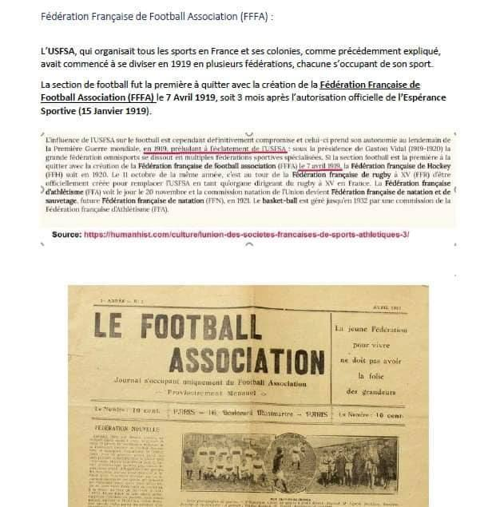
Montassier ou Malki ? Le premier président de l'EspéranceUne photographie circule depuis des années sous le nom de « Louis Montassier ». Elle montre en réalité Mohamed Malki, magistrat, et premier président tunisien du club.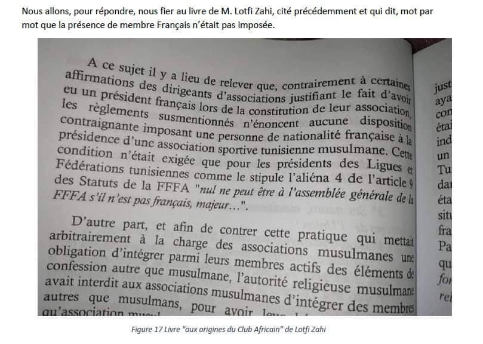
7 avril 1919 : la loi qui permit un président tunisienLe Club Africain aurait « imposé » un président tunisien à la France. Les statuts de la FFFA, et l'historien du club lui-même, disent autre chose.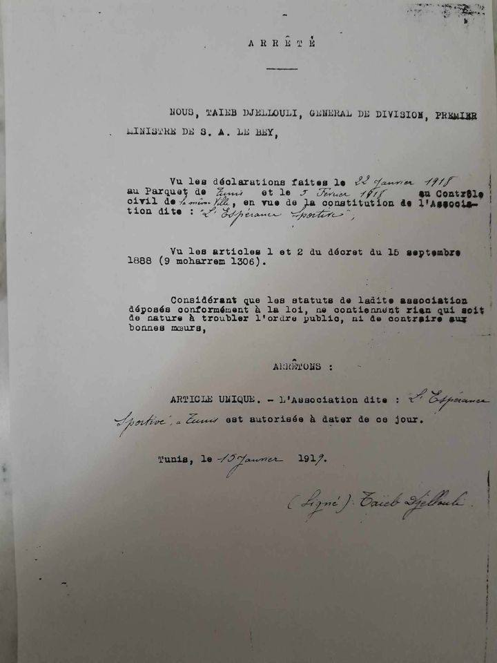
Deux fondations, deux calendriersOn dit la fondation du Club Africain entravée par l'occupant, et celle de l'Espérance expédiée par complaisance. Les arrêtés officiels racontent exactement l'inverse.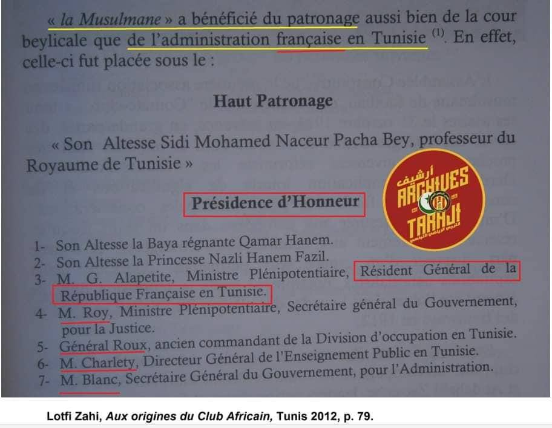
« Club islamique africain » : un nom jamais refusé ?Le Club Africain aurait d'abord voulu s'appeler « Club islamique africain », nom que la France aurait interdit. Avant et après lui, pourtant, des clubs portèrent sans difficulté le nom de l'islam.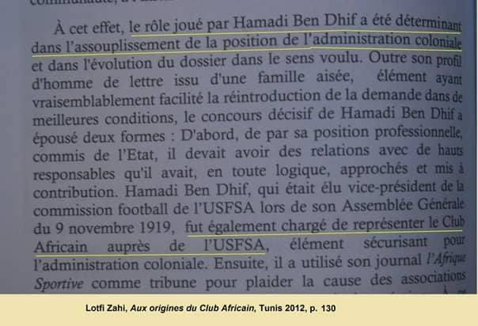
Hamadi Ben Dhif, l'homme de l'USFSAÀ qui veut parler de Montassier, on peut répondre par Hamadi Ben Dhif. Notable fortuné, dirigeant d'une fédération française, il fut l'artisan décisif de la fondation du Club Africain.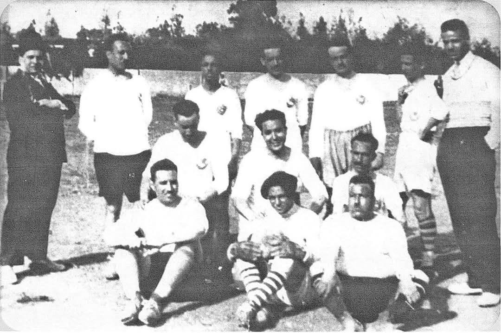
1920 : l'étoile et le croissant sur le maillotEn 1920, l'Espérance pose devant l'objectif avec, sur la poitrine, l'étoile et le croissant verts sur fond blanc. Le Club Africain, d'après son propre historien, n'arbore le drapeau qu'en 1946.- Mohamed Zouaoui et Hédi Kallel, les fondateursUn apprenti cordonnier du souk El Blaghjia et un jeune menuisier fraîchement diplômé : c'est d'eux qu'est née l'Espérance, avec une idée fixe, celle d'un club entièrement tuniso-musulman.
Qui portait le maillot
Avant 1956, qui jouait où : les feuilles de match ne mentent pas.
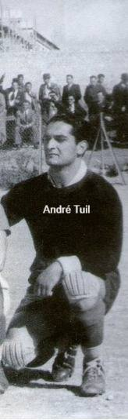
Neuf gardiens étrangers avant l'indépendanceAzzoro, Castellano, Tuil, Stanita, Marsala, Milazzo, Camilleri, Taïeb, Cefalati : ce n'est pas l'équipe d'un club français, c'est la liste des gardiens étrangers du Club Africain avant 1956.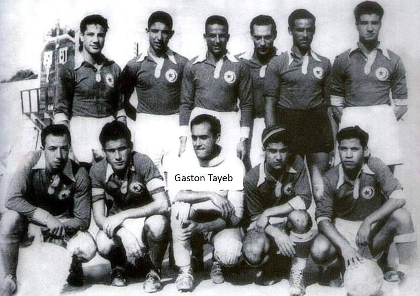
Gaston Taïeb, du Club Africain au but d'IsraëlGardien emblématique du Club Africain sous le protectorat, champion en 1946, Gaston Taïeb poursuivit sa carrière en France, puis en Israël, dont il défendit le but en sélection.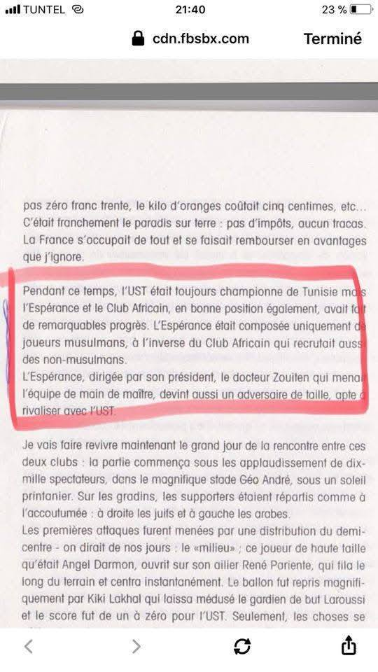
Le témoignage d'André TuilAncien joueur de l'UST puis du Club Africain, André Tuil a laissé des souvenirs. Il y décrit, sans y être obligé, une Espérance exclusivement musulmane, et plus populaire que son propre club. Durin, Milazzo et les derbys d'avant 1956« Brik multiplie les attaques, Durin et Milazzo se dépensent en défense » : ce n'est pas le récit d'un match contre l'Avant-Garde ou l'Italia, mais celui d'un derby contre le Club Africain.
Durin, Milazzo et les derbys d'avant 1956« Brik multiplie les attaques, Durin et Milazzo se dépensent en défense » : ce n'est pas le récit d'un match contre l'Avant-Garde ou l'Italia, mais celui d'un derby contre le Club Africain.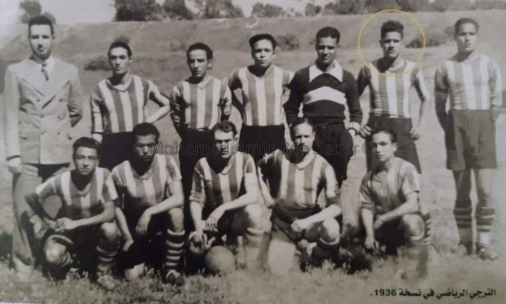
Seulement des Tunisiens musulmans, et cinq AlgériensAvant l'indépendance, seuls des Tunisiens musulmans ont porté le maillot de l'Espérance, à cinq exceptions près : cinq Algériens, dont deux deviendront des piliers de l'équipe du FLN.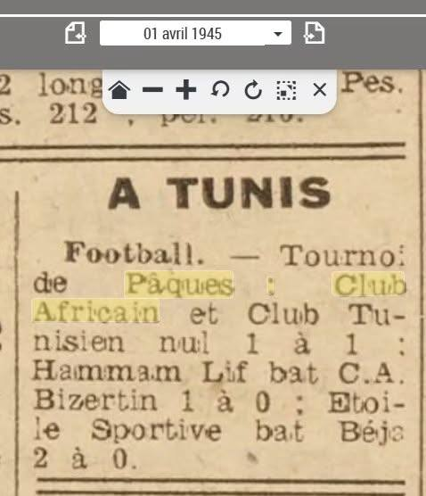
L'« entente » avec l'UST et les tournois de PâquesL'Espérance aurait « trahi » en disputant des tournois de Pâques et des matchs en entente avec l'Union sportive tunisienne. La presse d'époque montre que le Club Africain en faisait autant.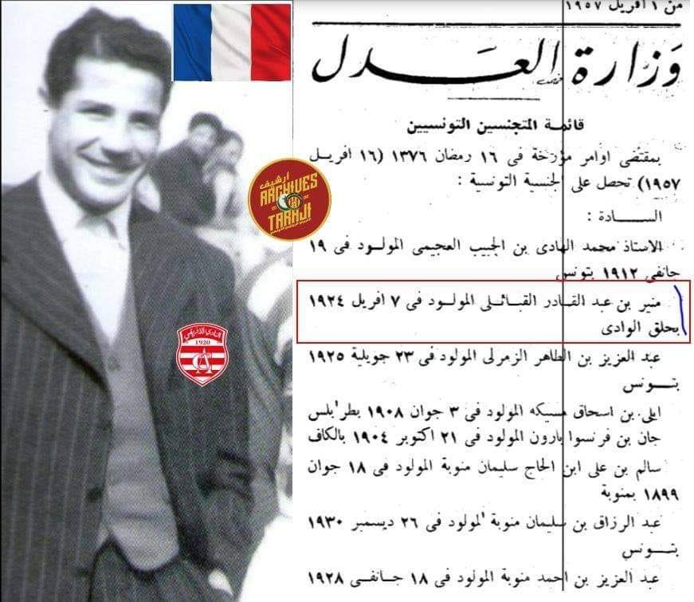
Mounir Kebaili, le soldat français dont le parc porte le nomLe parc A du Club Africain porte le nom de Mounir Kebaili. Les archives disent qui il était : un soldat français, naturalisé tunisien en 1957, fils du président de la Ligue des musulmans français de Tunisie.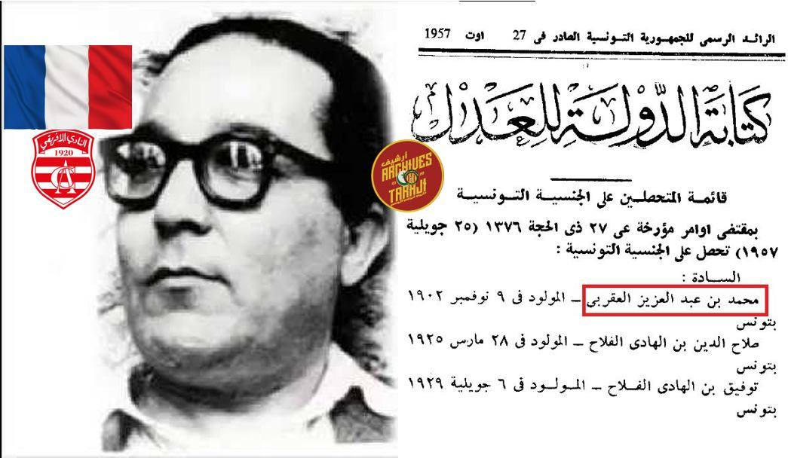
Mohamed Agrebi, fondateur naturalisé en 1957Cofondateur du Club Africain et premier entraîneur du club, Mohamed ben Abdelaziz Agrebi était de nationalité française. Il ne devint tunisien que le 25 juillet 1957.
Le mouvement national
Le club, Bab Souika et la lutte pour l'indépendance.
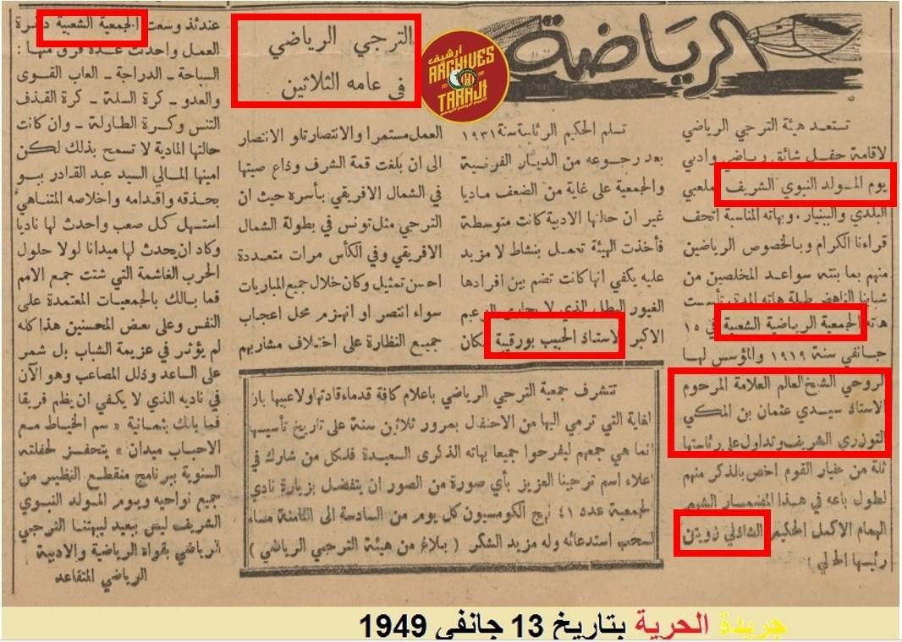
« La société populaire » : l'Espérance dans El HorriaLe 13 janvier 1949, El Horria, journal du mouvement national, consacre un article aux trente ans de l'Espérance. Il la nomme, deux fois, « la société sportive populaire ».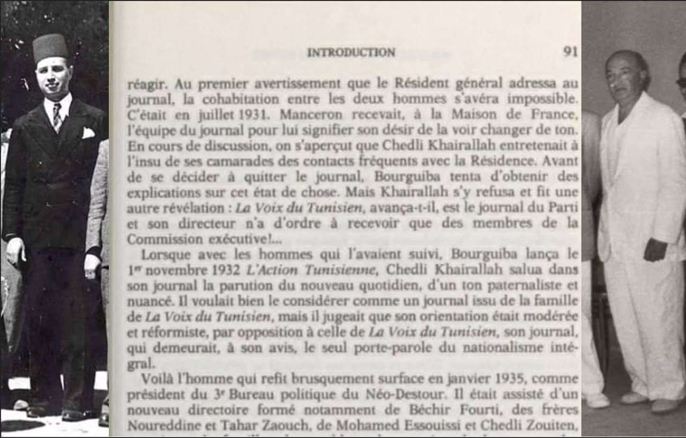
Bab Souika, le Néo-Destour et le troisième bureau politiqueEn janvier 1935, alors que les dirigeants du Néo-Destour sont exilés, un troisième bureau politique reprend la lutte. La moitié de ses membres viennent de l'Espérance.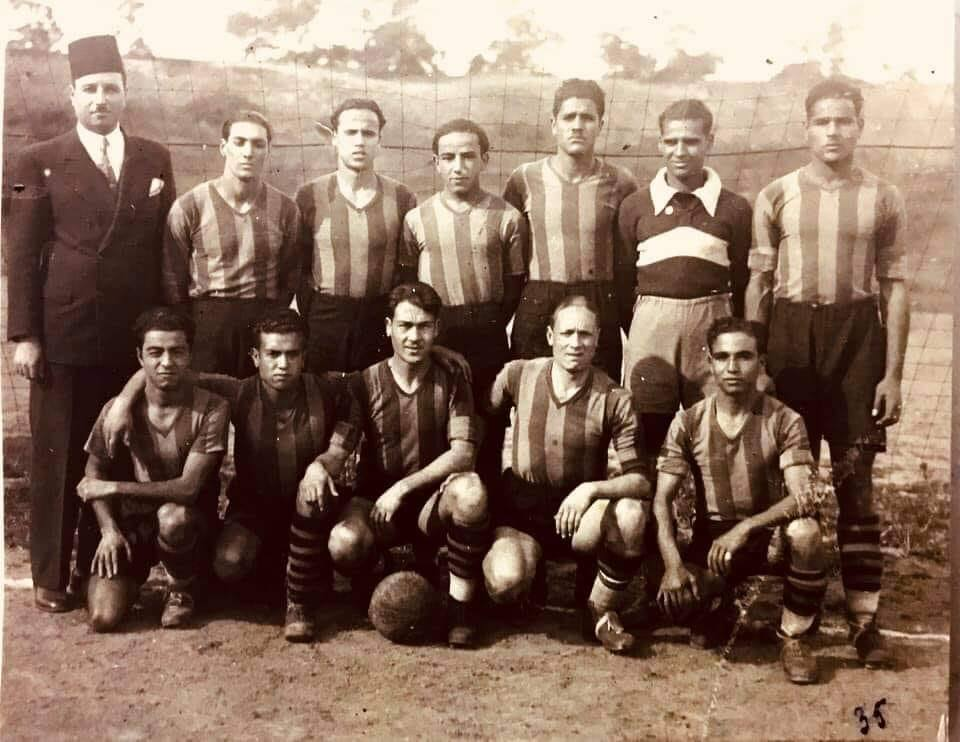
Chedly Zouiten et le Croissant-RougePendant la Seconde Guerre mondiale, la direction de l'Espérance, autour du docteur Chedly Zouiten, fonde une section du Croissant-Rouge pour secourir les Tunisiens.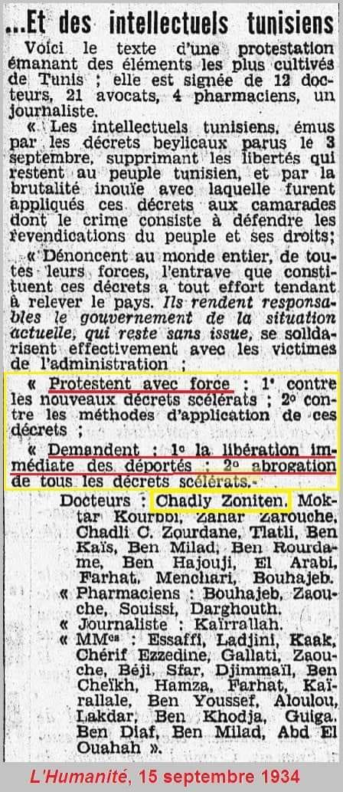
El Okbi et Zouiten face à Peyrouton1934-1936 : le Résident général Peyrouton exile les nationalistes. Le président de l'Espérance signe une protestation publique ; celui du Club Africain part à Paris défendre le Résident.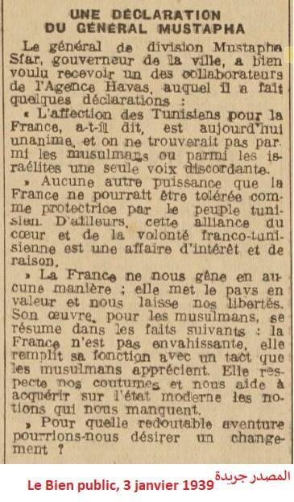
Mustapha Sfar, l'officier de la Légion d'honneurPrésident du Club Africain de 1927 à 1930, cheikh El Medina, commandeur du Dragon d'Annam : quelques mois après le 9 avril 1938, Mustapha Sfar déclarait que « la France ne nous gêne en aucune manière ».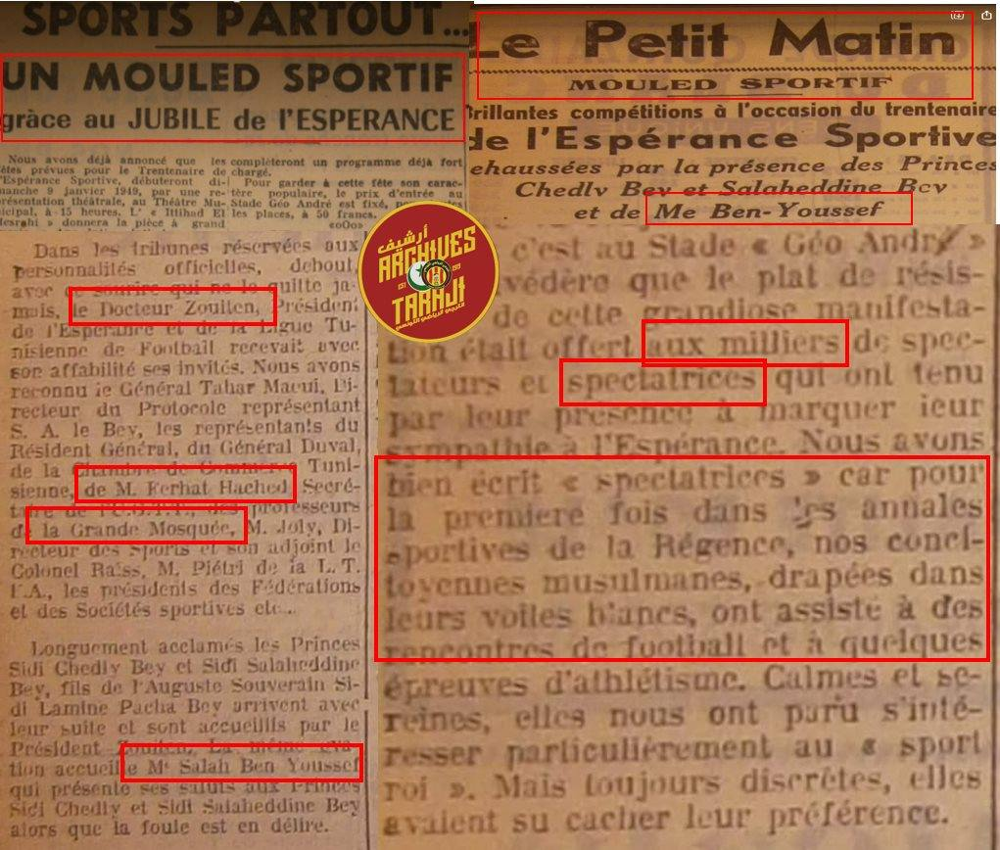
Le trentenaire de 1949, en présence de Farhat HachedLe 12 janvier 1949, jour du Mouled, l'Espérance fête ses trente ans. Jamais un club tunisien n'avait célébré son anniversaire. Farhat Hached et Salah Ben Youssef sont dans la tribune ; des femmes en sefsari, pour la première fois, dans le stade.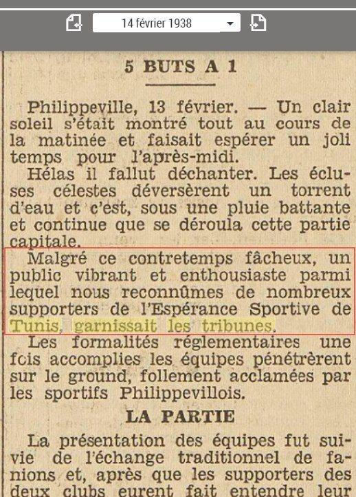
Skikda, 1938 : l'Espérance acclamée en AlgérieEn février 1938, l'Espérance se rend à Philippeville pour l'Aïd el-Kébir. Les tribunes sont pleines de supporters algériens venus voir, pour la première fois, une grande équipe exclusivement musulmane. L'Espérance et l'équipe du FLNAvril 1958 : des footballeurs algériens quittent la France pour fonder à Tunis l'équipe du FLN. Le président de l'Espérance leur ouvre les terrains ; un ancien joueur du club en devient le capitaine.
L'Espérance et l'équipe du FLNAvril 1958 : des footballeurs algériens quittent la France pour fonder à Tunis l'équipe du FLN. Le président de l'Espérance leur ouvre les terrains ; un ancien joueur du club en devient le capitaine.
« Le club du peuple »
Ce que disait la presse d'avant l'indépendance.
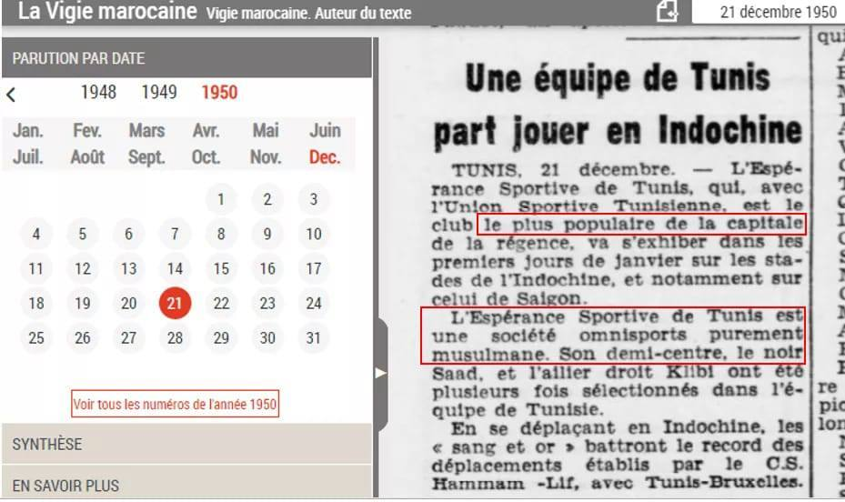
Ce que disait la presse d'avant 1956Le Club Africain se dit « le club du peuple » depuis toujours. Les journaux et les livres d'avant l'indépendance réservent pourtant ce mot à un autre club.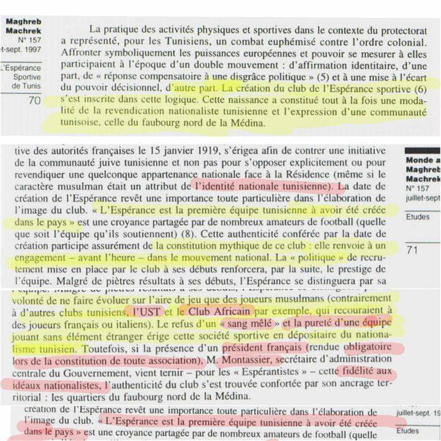
Le défi, toujours sans réponseDepuis 2024, Taraji Archives renouvelle un défi simple : produire un seul texte d'avant 1956 qui présente le Club Africain comme le club le plus populaire. Personne ne l'a relevé.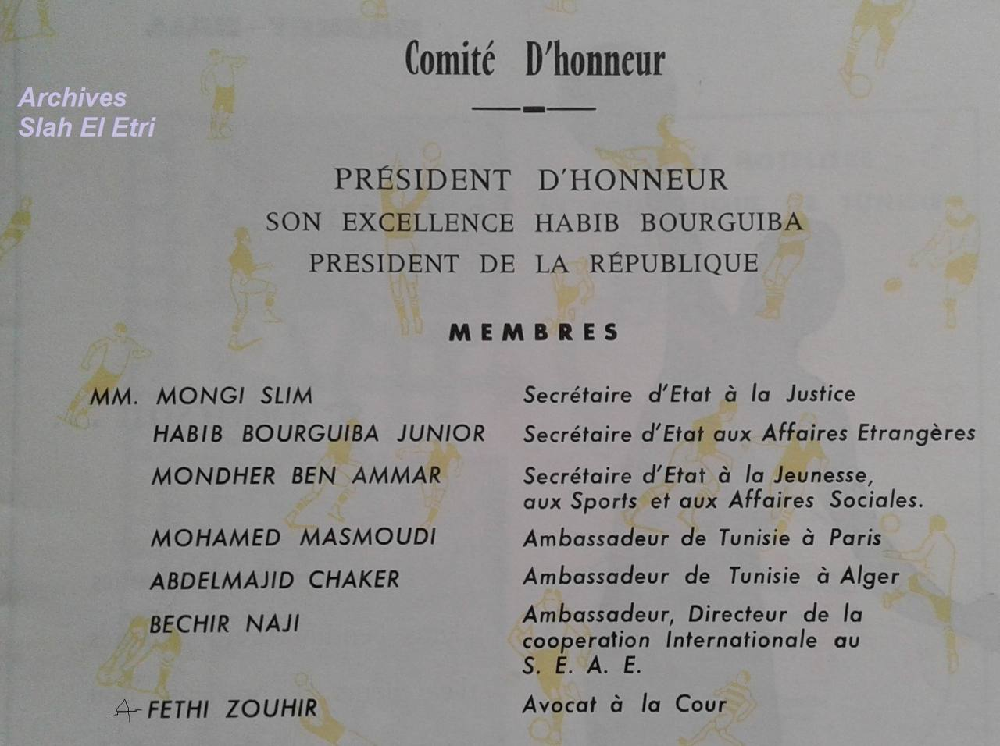
Hassen Belkhodja, membre d'honneur du Club Africain ?Un document circule où Hassen Belkhodja figure parmi les membres d'honneur du Club Africain, preuve qu'il aurait été « clubiste ». C'est confondre membre d'honneur et supporter.
Rijal Taraji
Les hommes de l'Espérance, au club comme au service du pays.
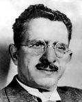
Mohamed Malki, le juge présidentPremier président tunisien de l'Espérance (1919-1923), Mohamed Malki termina sa carrière à la tête de la Cour de cassation. Un homme de loi, et un homme de la nation.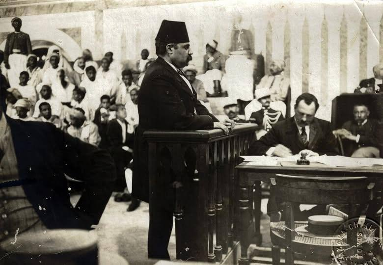
Abdeljelil Zaouche, le réformateurJeune Tunisien de la première heure, industriel, journaliste, ministre, défenseur de la langue arabe face au général Esteva : Abdeljelil Zaouche présida aussi l'Espérance.- Chedly Zouiten, trente-trois ans de présidencePremier chirurgien-dentiste tunisien, président de l'Espérance de 1930 à 1963, membre du troisième bureau politique du Néo-Destour, président de la Fédération : Chedly Zouiten est l'homme d'une époque.
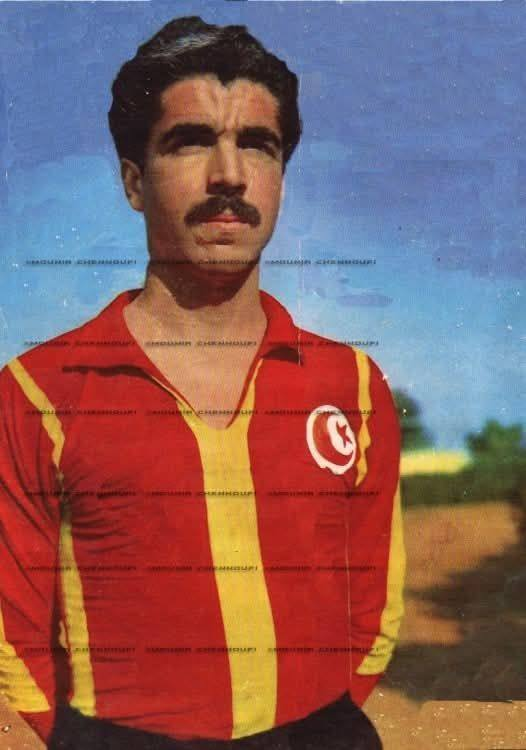
Moncef Kelibi, « le maître »Une famille, deux générations, un même maillot : avant Moncef, son père Saïd et son oncle Mohsen avaient déjà quitté le Stade Africain pour l'Espérance.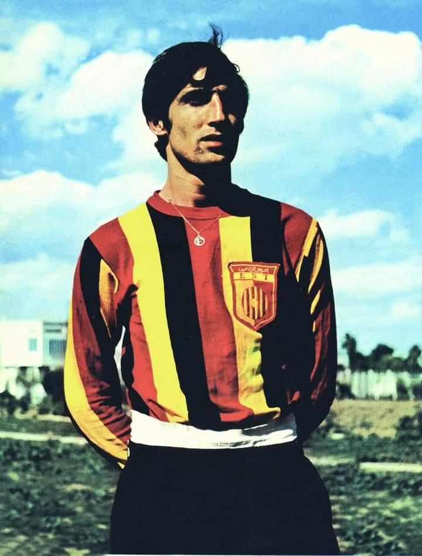
Abdeljabbar Mchouch, premier buteur tunisien en AfriqueEn 1971, à Benghazi, il marque le premier but d'un club tunisien en Coupe d'Afrique des clubs champions. On le surnommait le Cruyff de l'Espérance.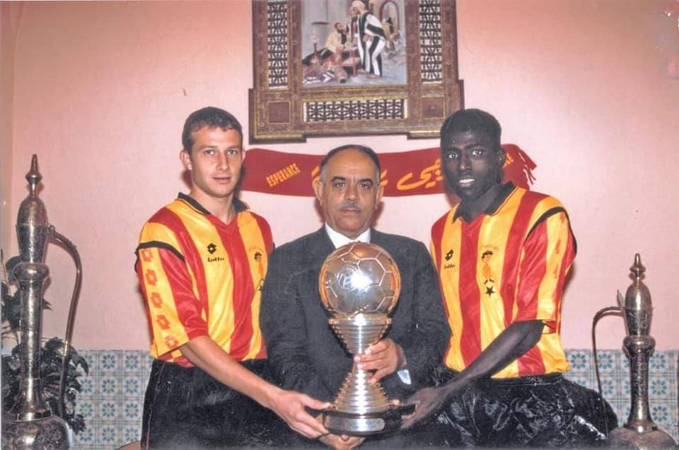
Amor Bahri, soixante-douze ans au service du clubIl a servi l'Espérance pendant soixante-douze ans et vu passer des générations entières de joueurs. Âm Amor s'est éteint en septembre 2025.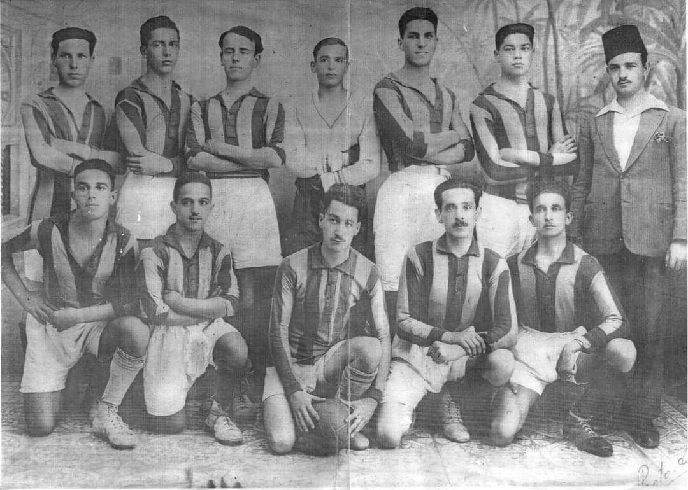
L'équipe de la montée, 1927-1928En 1927-1928, l'Espérance devient le premier club tunisien à accéder à la deuxième division. Voici les hommes de cette montée.
Titres et premières fois
Les dates qui font l'histoire du doyen.
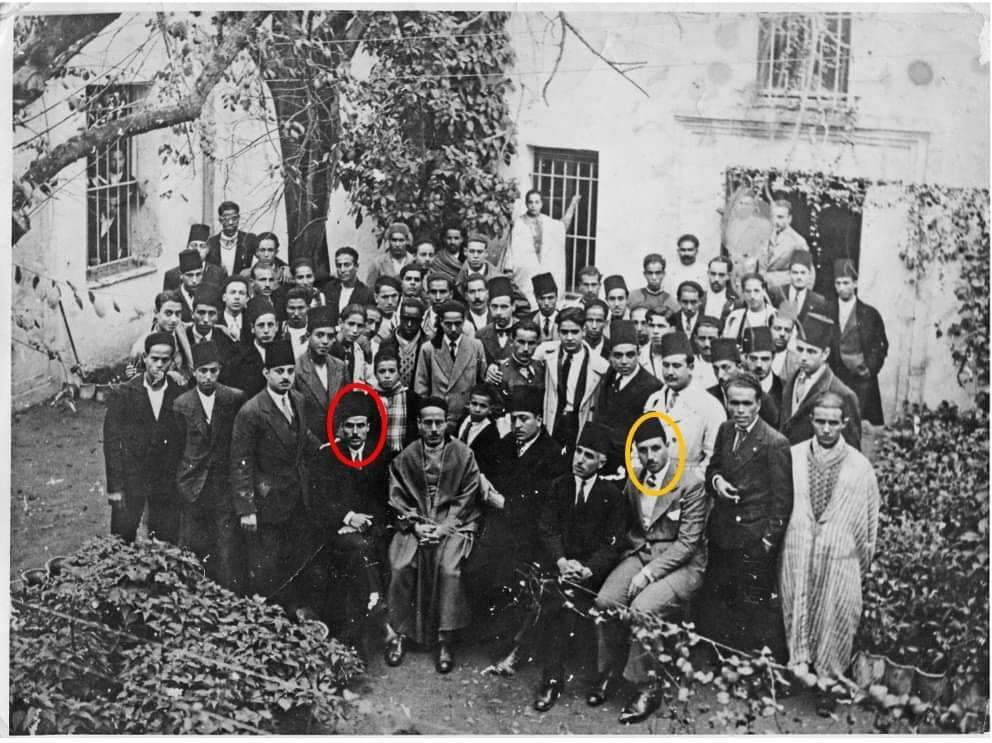
1931 : l'Étoile reçue à la SadikiaEn 1931, avant d'aller affronter Ferryville, les joueurs et supporters de l'Étoile du Sahel sont reçus à Tunis par l'Espérance. Sur la photo : Habib Bourguiba et Chedly Zouiten. 1936 : la première finale de Coupe de TunisieEn 1936, l'Espérance est le premier club tunisien à atteindre la finale de la Coupe de Tunisie. Battue 1-0 par le Stade Gaulois, sur fond d'arbitrage contesté.
1936 : la première finale de Coupe de TunisieEn 1936, l'Espérance est le premier club tunisien à atteindre la finale de la Coupe de Tunisie. Battue 1-0 par le Stade Gaulois, sur fond d'arbitrage contesté.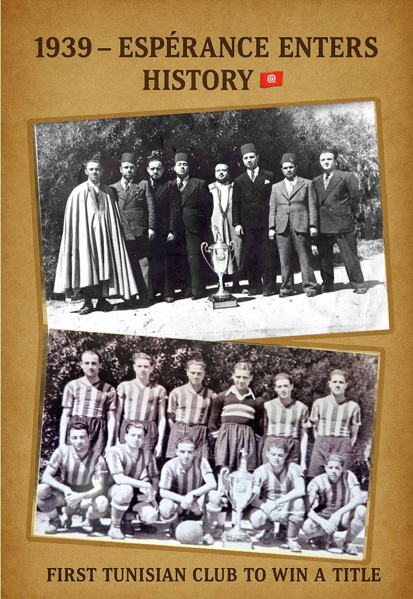
28 mai 1939 : le premier titre tunisienLe 28 mai 1939, l'Espérance bat l'Étoile du Sahel 4-1 en finale de la Coupe de Tunisie. C'est le premier trophée officiel remporté par un club tunisien, et il l'est par des Tunisiens seulement.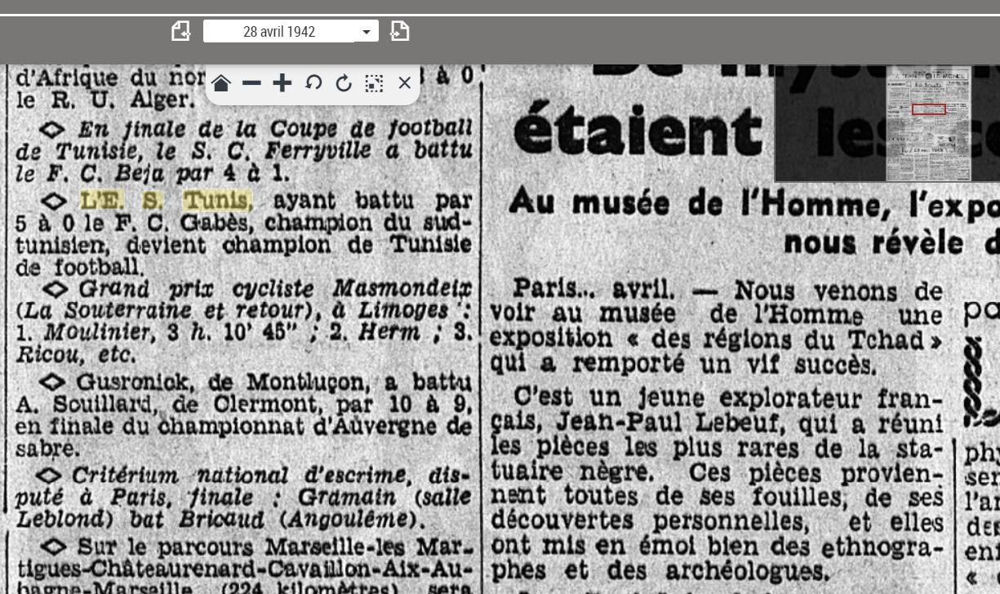
1942 : le premier championnat, preuve à l'appuiL'Espérance n'aurait pas été championne de Tunisie en 1942 ? La presse de l'époque, conservée à la Bibliothèque nationale de France, dit le contraire.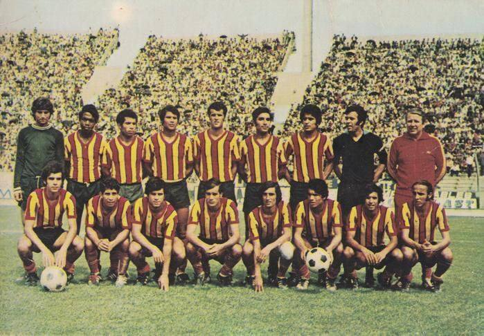
1971 : la première participation africaineChampionne de Tunisie 1969-1970, l'Espérance est en 1971 le premier club tunisien engagé en Coupe d'Afrique des clubs champions. Il faudra ensuite attendre treize ans pour en voir un autre.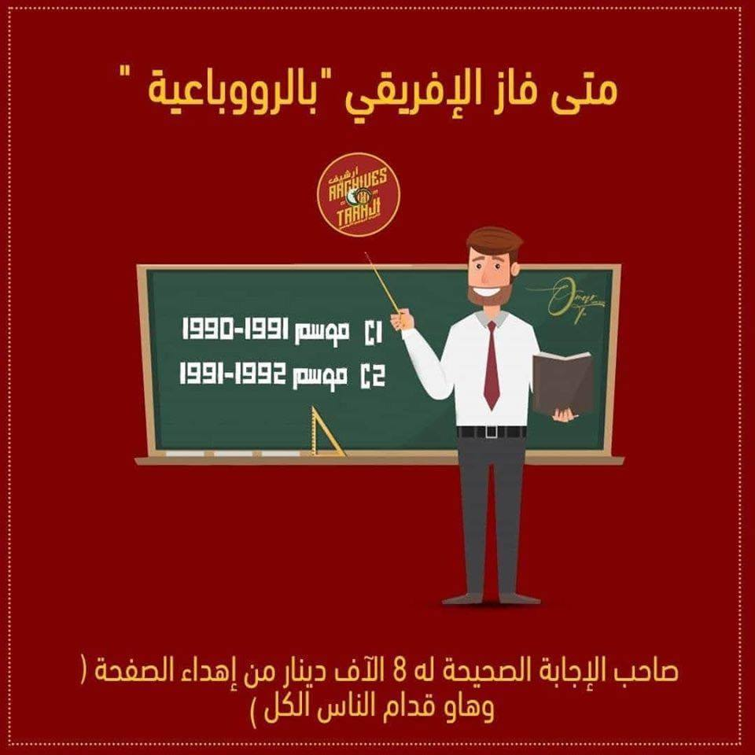
Le « quadruplé » : quelle saison ?Le Club Africain revendique un « quadruplé ». Mais en 1990-1991, l'Espérance réalise le doublé national ; en 1991-1992, le Wydad est champion d'Afrique. Reste à savoir où loger les quatre trophées.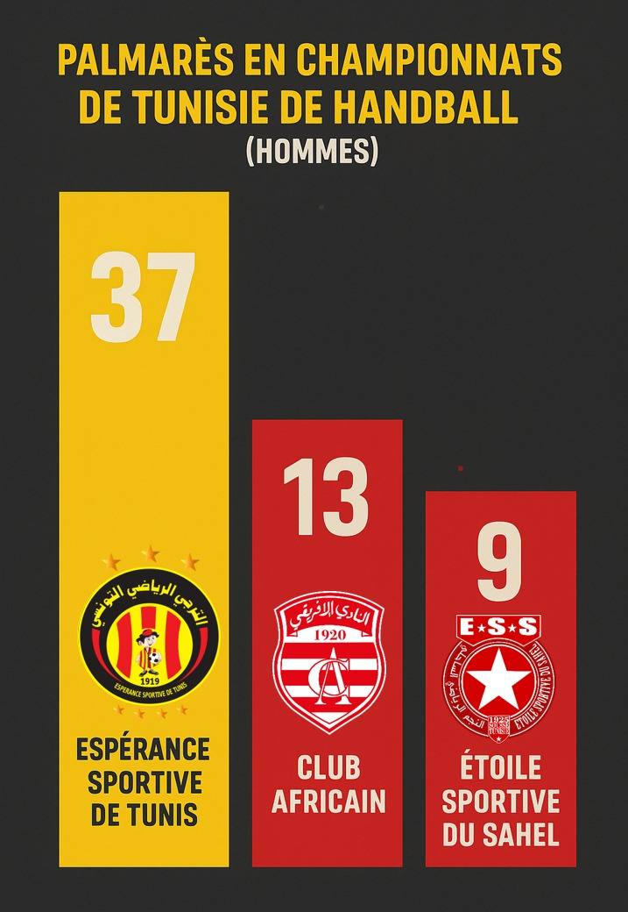
Un club omnisports : handball, volley, basketL'Espérance n'est pas qu'un club de football. En handball et en volley-ball, son palmarès dépasse celui de tous ses rivaux réunis ; en basket, ses neuf titres d'avant 1994 ont longtemps fait figure de record.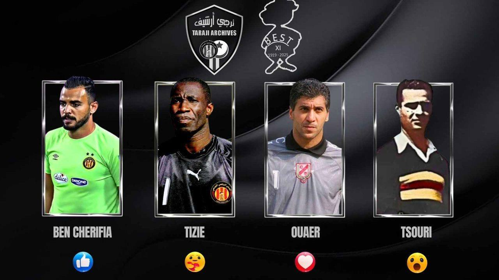
Les meilleurs à chaque posteGardiens, attaquants, onze de légende : les choix des supporters, et ceux de Taraji Archives, pour raconter plus d'un siècle d'Espérance.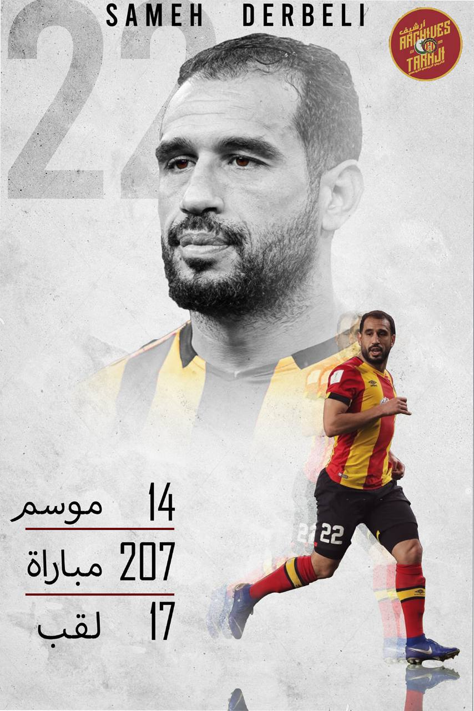
2018-2019 : deux Ligues des champions de suiteEn 2018 et 2019, l'Espérance domine l'Afrique et remporte deux Ligues des champions consécutives, la seconde sans la moindre défaite, sous la direction de Moïne Chaâbani.
Derbys et arbitrage
Les images, les chiffres, et les légendes qui ne tiennent pas.
- Les derbys des années Chiboub : ce que montrent les images« Les derbys de l'époque Chiboub ne comptent pas. » La formule est connue. Les images des matchs de cette époque racontent une tout autre histoire.
- Les classicos face à l'ÉtoileSur trente ans de classicos entre l'Espérance et l'Étoile du Sahel, les erreurs d'arbitrage recensées ne vont pas dans le sens que l'on croit.
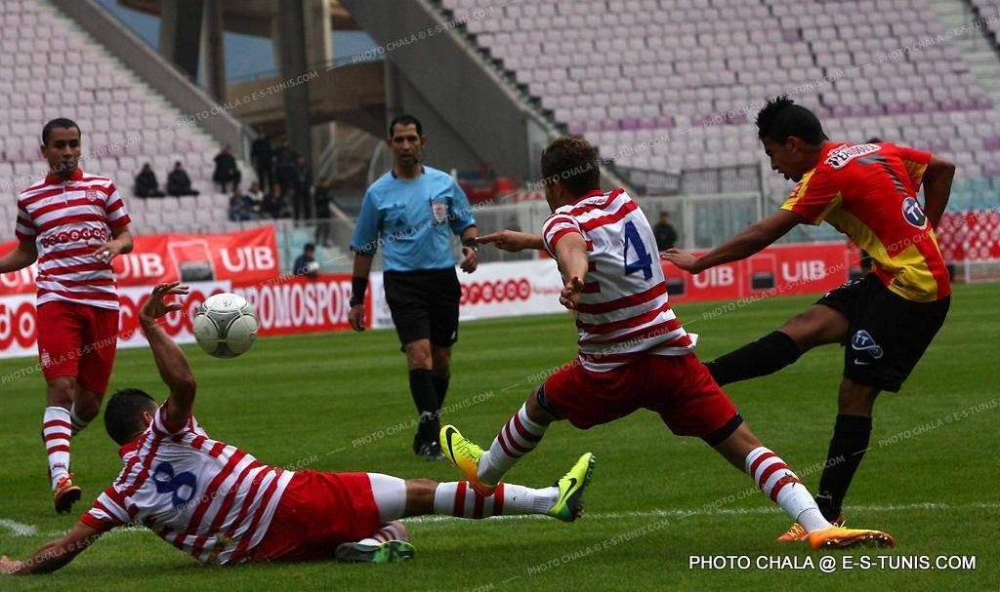
Les penaltys en chiffres« L'Espérance gagne grâce aux penaltys. » Depuis 2010-2011, c'est pourtant le club du « Big Four » qui en a obtenu le moins, et celui qui en dépend le moins.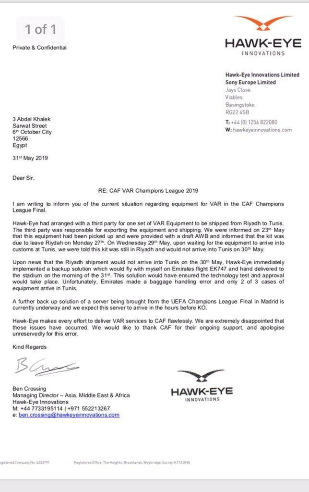
Le VAR de 2019 et la lettre de Hawk-EyeL'Espérance aurait « bloqué » le VAR lors de la finale retour de la Ligue des champions 2019. Le prestataire, la CAF et le Tribunal arbitral du sport ont dit pourquoi le système n'était pas là.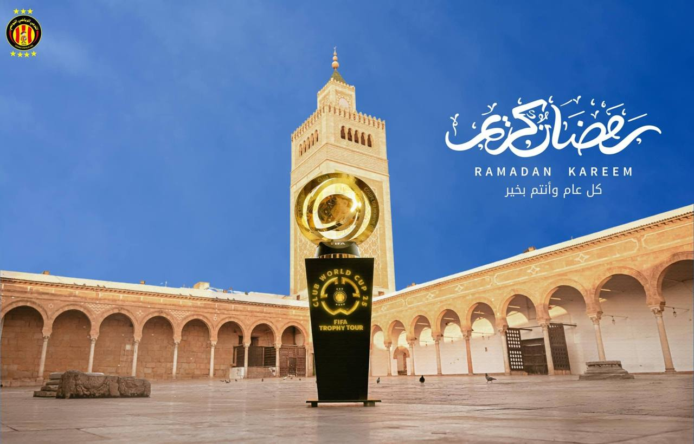
Fausses légendes : Ramadan, Ben Khalled, Soliman, la panne de lumièreCertaines histoires se répètent depuis si longtemps qu'on les croit vraies. Quatre d'entre elles, confrontées aux faits.
Records et public
Ce que disent les chiffres.
- Les records africains de l'EspéranceDix records d'Afrique détenus seule ou à égalité, dont deux titres remportés sans la moindre défaite et onze phases de poules consécutives : l'Espérance est l'autre géant de la Ligue des champions.
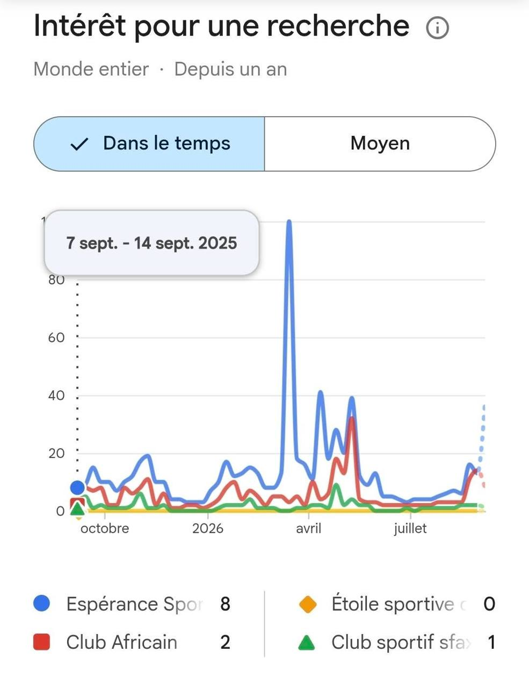
Le public en chiffresAbonnements, recherches sur Google, abonnés sur les réseaux : les chiffres officiels ne laissent guère de place au débat sur le club le plus suivi de Tunisie.- Le mythe de l'éternel secondL'Étoile du Sahel passe pour « l'éternel second » du championnat. Les classements disent que ce titre revient à un autre club.